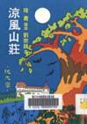
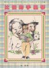
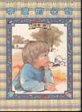
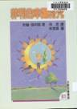
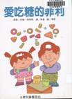
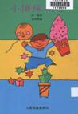
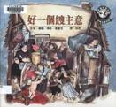

譯作目錄
| 《傻鵝皮杜妮》-兒童翻譯小說 | ||
|---|---|---|
| 琦君的兒童文學翻譯。 | ||
1965/國語日報出版 從缺
|
||
| 《涼風山莊》-兒童翻譯小說 | ||
| 琦君的兒童文學翻譯。 | ||

1988/純文學 16/71 |
||
| 《比伯的手風琴》-兒童翻譯小說 | ||
| 琦君的兒童文學翻譯。 | ||

1989年7月 漢藝色研文化事業有限公司 16/165 |
||
| 《李波的心聲》-兒童翻譯小說 | ||
| 琦君的兒童文學翻譯。 | ||

1989年9月 漢藝色研文化事業有限公司 16/173 |
||
| 《菲利的幸運符咒》-兒童翻譯小說 | ||
| 菲利大發奇想，在家中翻箱倒櫃找出一個圓圓亮亮的鐵片，將「它」視為自己的幸運符咒，他隨身帶著，除了用「它」與艾默里的「北歐小矮人」對抗，也想靠「它」在考試中過關斬將，在生活中無往不利......，幸運符咒真的帶來幸運了嗎？得到好運的秘訣又是什麼？ | ||

2001年11月 九歌 16/114 |
||
| 《愛吃糖的菲利》-兒童翻譯小說 | ||
| 因為愛吃糖，在菲利的生日茶會上，他丟掉了邀請函………他因此惹了不少糗事，令爸媽又尷尬、又好笑、又心疼。最令菲利難以接受的，是家裡多了一個小貝貝，卻也讓他親眼看見了什麼是「魔術」。 | ||

2001年11月 九歌 16/139 |
||
| 《小偵探菲利》-兒童翻譯小說 | ||
| 這是琦君繼《愛吃糖的菲利》後另一本童書譯作，譯筆流暢，故事精彩，是既有趣又富啟示性的兒童小說。 | ||

2003年9月 九歌 16/114 |
||
| 《好一個餿主意》-兒童翻譯小說 | ||
| 你滿足於現狀嗎？是否常常幻想有一天……本書描述一個經常抱怨的苦命人，向一個名叫雷比的人請求幫助，結果雷比幫他想了一個餿主意，幾經波折，他終於體悟雷比主意的神妙，不但從此與家人快樂的生活著，更學會珍惜周遭所擁有的。榮獲1978年凱迪克銀牌獎。 | ||

2003 遠流 25/328 |
||